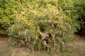
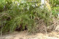
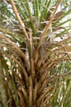
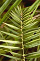
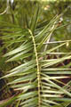
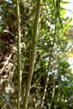
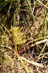
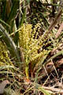
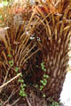

Common name in Singhalese : Indi









Diagnostic characters
Botany & morphology
Regeneration
Reproductive biology
Distribution
Uses
Status
Short, dioecious palm. Leaves pinnatisect, bright green rigid. Flower yellowish; fruit scarlet.
Leaves compound, pinnate, leaflets linear, longitudinally folded and attached obliquely by their folded bases to rachis, lower ones usually transformed into spines.
Inflorescence spadix from leaf axils, branched; spathe simple, basilar, coriaceous.
Flowers unisexual, small, yellowish; calyx in male flower copular, 3-toothed; petals 3, obliquely ovate; stamens 6, anthers sub-sessile, linear; female flower, globose, accrescent, petals rounded, imbricate, staminodes 6, carpels 3, free, stigma sessile, uncinate, ovules erect.
Fruit red, oblong, apiculate, 1-seeded, pericarp fleshy, oblong, ventrally grooved.
Epigeal germination.
Pollination by insects and birds.
Southern coast of Sri Lanka.
Leaves used in making of mats and boxes; fruit pulp edible.
Endemic to Sri Lanka.
Top of the page